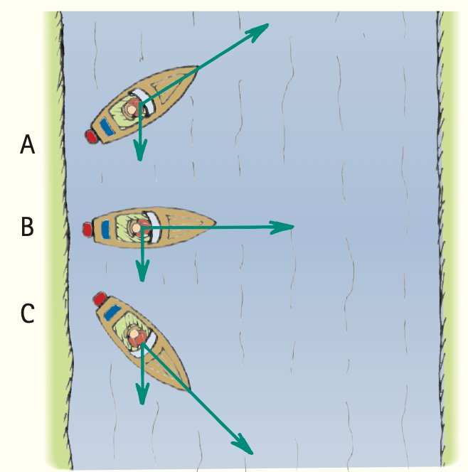

1. Describe how arrow length and arrow direction play different roles in a velocity vector.
2. Two vectors point east, but one is twice as long using the same scale. Compare their velocities.
3. What does a motion diagram with dots getting farther apart show?
4. Name three different representations that can be used together in a motion model.
5. What does it mean to critique a motion model?
6. A boat points across a river while the current moves downstream. Explain why the boat’s velocity relative to shore can differ from its velocity relative to the water.

7. A velocity vector changes from 3 cm west to 6 cm west on the same scale. Explain what happened to speed and velocity.
8. A data table shows distance values 0, 1, 4, 9, 16 m at one-second intervals. Describe how a matching motion diagram and distance–time graph should change over time.
9. A graph shows a straight line with constant slope, while the written story says the object speeds up. Decide which claim is unsupported and explain the correction.
10. Successive velocity arrows keep the same length but turn gradually around a curve. Explain what this model says about speed, velocity, and acceleration.
11. A student draws equally spaced motion dots but pairs them with a table whose distance increases by larger amounts each second. Identify the mismatch, cite evidence from both representations, and propose one valid revision.
12. A motion model includes a vector diagram, graph, and story. The vectors change direction at constant length, the story says “constant speed around a turn,” but the graph is labeled “constant velocity.” Evaluate the three representations and revise the inconsistent statement.
13. The length of a scaled velocity arrow represents
14. The orientation of a velocity arrow represents
15. Equal-length arrows pointing different directions mean
16. A longer arrow in the same direction and scale represents
17. Growing dot gaps in equal time intervals show
18. Which pair should tell the same motion story in a consistent model?
19. What is the first step in critiquing a model?
20. A valid revision should